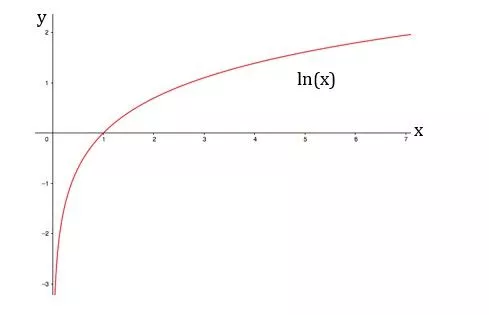

Funções logarítmicas são funções matemáticas que relacionam dois números, um base e um expoente. A função logarítmica mais comum é a função logarítmica natural, que tem como base o número e.
Voltar ao topo
As funções logarítmicas são representadas da seguinte forma:
log_b(x) = y
Onde x é o valor da função, y é o valor do expoente e b é a base da função.
Voltar ao topo
O gráfico da função logarítmica natural é uma curva que se aproxima do eixo das abscissas, mas nunca o toca.
Para construir o gráfico da função logarítmica natural, podemos usar o seguinte procedimento:
Suponhamos a função "log_10(x) = y ", usando o método acima, teriamos a seguinte tabela :
| X | log_10(x) |
| 1 | 0 |
| 10 | 1 |
| 100 | 2 |
| 1000 | 3 |
| 10000 | 4 |
As funções logarítmicas possuem as seguintes propriedades:
As funções logarítmicas são usadas em uma variedade de aplicações, como:
Funções modulares são funções matemáticas que possuem como lei de formação uma expressão com módulo. O módulo de um número real é seu valor absoluto, ou seja, sua distância de zero.
Voltar ao topoAlguns exemplos de funções modulares são: f(x) = |x| f(x) = |x - 2| f(x) = |x + 3| - 2 f(x) = |x^2 - 3x + 5|
Os gráficos das funções modulares são simétricos em relação ao eixo y. Isso ocorre porque o valor absoluto de um número não é alterado se seu sinal for invertido. Além disso, os gráficos das funções modulares podem ser divididos em dois tipos:
Voltar ao topoAs funções modulares possuem algumas propriedades importantes, que podem ser usadas para simplificar seu cálculo ou estudo. Algumas dessas propriedades são: Propriedade da simetria: f(-x) = f(x) para funções pares. Propriedade da antisimetria: f(-x) = -f(x) para funções ímpares. Propriedade da subaditividade: f(x + y) = f(x) + f(y). Propriedade da multiplicatividade: f(x * y)=|x| * |y|.
Para calcular o valor de uma função modular, é importante lembrar que o valor absoluto de um número real é sempre positivo ou zero. Assim, para calcular f(x) = |x|, podemos usar a seguinte regra: Se x >= 0, então f(x) = x. Se x < 0, então f(x)=-x.
As funções modulares são um tipo de função matemática importante que possui diversas aplicações em diferentes áreas, como a física, a engenharia e a matemática financeira. Compreender as propriedades e características das funções modulares é essencial para resolver problemas que envolvem esse tipo de função.
Progressões aritméticas e geométricas são sequências numéricas que possuem propriedades específicas.
Uma progressão aritmética (PA) é uma sequência numérica em que a diferença entre dois termos consecutivos é constante.
Uma PA é uma sequência numérica (a1, a2, ..., an) em que a diferença entre dois termos consecutivos é constante, ou seja, an - a(n - 1) = const
As progressões aritméticas possuem as seguintes propriedades: A soma de n termos de uma PA é igual a Sn = (a1 + an)/2 * n A média aritmética dos termos de uma PA é igual à média dos dois primeiros termos. A soma dos quadrados dos termos de uma PA é igual a Sn^2 = (a1^2 + an^2)/2 * n
Voltar ao topoAlguns exemplos de progressões aritméticas são: (2, 5, 8, 11, ...) (-3, -1, 1, 3, ...) (1, 2, 4, 8, ...)
Uma progressão geométrica (PG) é uma sequência numérica em que o quociente entre dois termos consecutivos é constante.
Uma PG é uma sequência numérica (a1, a2, ..., an) em que o quociente entre dois termos consecutivos é constante, ou seja, a(n - 1)/a(n - 2) = const
As progressões geométricas possuem as seguintes propriedades: A soma de n termos de uma PG é igual a Sn = a1 * (1 - r^n)/(1 - r) A razão entre o primeiro e o último termo de uma PG é igual ao r^n, onde r é a razão da PG. A soma dos n primeiros termos de uma PG é igual à soma dos n primeiros termos de uma PA com razão r.
Alguns exemplos de progressões geométricas são: (2, 4, 8, 16, ...) (1, 2, 4, 8, ...) (1, 1/2, 1/4, 1/8, ...)
As principais diferenças entre as progressões aritméticas e geométricas são: Na progressão aritmética, a diferença entre dois termos consecutivos é constante. Na progressão geométrica, o quociente entre dois termos consecutivos é constante. A soma dos termos de uma progressão aritmética pode ser calculada usando a fórmula Sn = (a1 + an)/2 * n. A soma dos termos de uma progressão geométrica pode ser calculada usando a fórmula Sn = a1 * (1 - r^n)/(1 - r).
Voltar ao topoA matemática financeira é um ramo da matemática que estuda o valor do dinheiro no tempo. Ela é usada para calcular o valor futuro de um investimento, o valor presente de um pagamento futuro, a taxa de juros de um empréstimo, e outros conceitos relacionados ao dinheiro.
Os principais conceitos da matemática financeira são: Capital: é o valor presente de um investimento. Juros: é a remuneração do capital. Tempo: é o período de tempo em que o capital é aplicado. Taxa de juros: é a percentagem do capital que é paga de juros a cada período de tempo.
As principais operações financeiras são: Aplicação financeira: é o depósito de um capital em uma instituição financeira. Empréstimo financeiro: é o recebimento de um capital de uma instituição financeira. Cálculo de juros: é o cálculo do valor dos juros de uma aplicação ou empréstimo. Cálculo do valor futuro: é o cálculo do valor de um capital no futuro. Cálculo do valor presente: é o cálculo do valor de um capital no presente.
Voltar ao topoA matemática financeira é usada em diversas áreas, como: Economia: para calcular o PIB, a inflação, e outros indicadores econômicos. Contabilidade: para calcular o valor do patrimônio de uma empresa. Finanças pessoais: para planejar o orçamento e os investimentos. Negócios: para calcular o retorno sobre o investimento (ROI).
Aqui estão alguns exemplos de aplicações da matemática financeira: Um investidor aplica R$ 10.000,00 a uma taxa de juros de 10% ao ano. Após um ano, o valor do investimento será de R$ 11.000,00. Uma pessoa solicita um empréstimo de R$ 100.000,00 a uma taxa de juros de 15% ao ano. O valor das parcelas mensais do empréstimo será de R$ 2.500,00. Uma empresa compra um equipamento por R$ 100.000,00. A empresa espera recuperar o investimento em cinco anos. A taxa de retorno esperada sobre o investimento é de 10% ao ano.
Voltar ao topoEu queria ter me dedicado melhor aos estudos da matemática neste trimestre, principalmente por ser uma das minhas matérias prediletas, contudo, acabei dando uma "relaxada" para poder estudar mais física, que acabou me prejudicando. Mas mesmo assim, consegui entender, não da maneira que teria entendido se houvesse maior comprometimento de minha parte, mas o suficiente para poder resolver alguns exercícios. Gostei bastante destes conteúdos principalmente por eu ver uma grande aplicação deles no nosso cotidiano, principalmente da Matemática Financeira. Um conteúdo que achei mais difícil foi justamente a matemática financeira, principalmente quando você está fazendo a resolução de um exercício e percebe que irá precisar usar logaritmo, ainda estou com dificuldades de ter essa percepção, o que faz com que eu pense que o cálculo está errado. Ademais, estudarei nas férias novamente este conteúdo para poder tê-lo espairecido.
Voltar ao topo